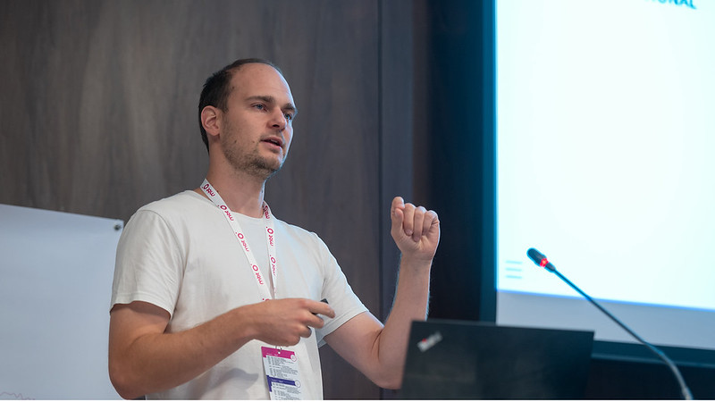
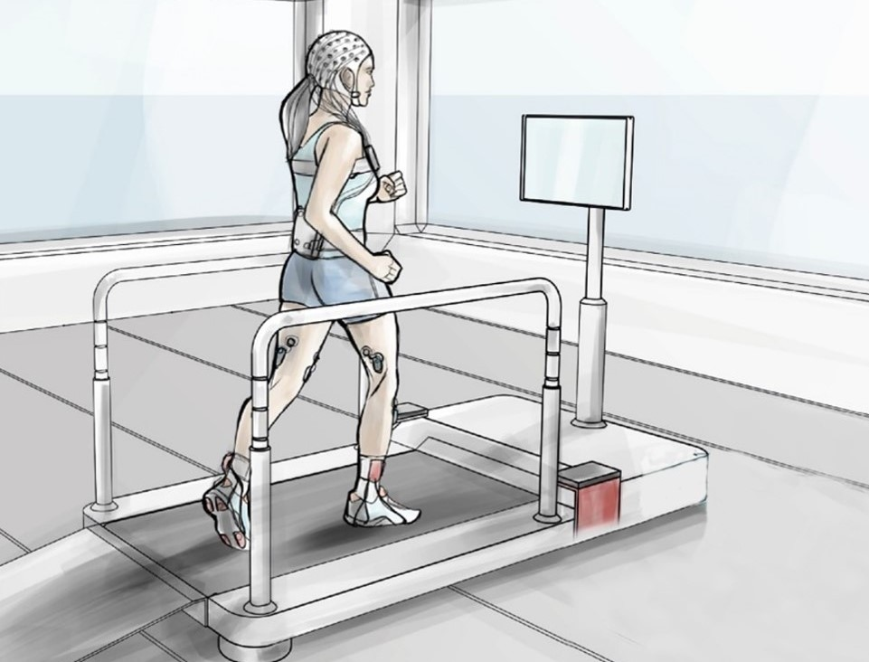

StepUp November Newsletter
Hallo, wir freuen uns, Ihnen den ersten Newsletter vom StepuP Projekt präsentieren zu dürfen. In diesem Newsletter möchten wir das Projekt vorstellen und über den aktuellen Stand des Projekts informieren, um einen Einblick in unsere Arbeit zu geben. Wir wünschen viel Spaß beim Lesen!
Das Projekt
Personen mit Parkinson berichten häufig über Gangunsicherheiten und Stürze, welche zu Einschränkungen im Alltag führen können. In einer Voruntersuchung haben wir knapp 300 australische Parkinsonpatient:innen gefragt welche Symptome die Erkrankung mit sich bringt und welche von diesen Symptomen am wenigsten von klinischer Behandlung profitieren werden. Dabei wurden Gangunsicherheiten und Stürze mit über 90% am häufigsten genannt. Das hängt damit zusammen, dass Gangunsicherheiten und Stürze bei Parkinson noch nicht gut verstanden sind. Hier setzt unser StepuP Projekt an: Das StepuP Projekt zielt darauf ab, das Zusammenspiel von Gehirn, Muskeln und Koordination bei Parkinson besser zu verstehen.
Hintergrund (Gehen bei Parkinson)
Bei Menschen mit der Parkinson-Krankheit funktioniert das System, welches die Fußstellung beim Gehen steuert, nicht mehr so gut. Wir gehen davon aus, dass die große Mehrzahl der Stürze während des Gehens auf „Denkfehler“ zurückzuführen ist. Unter Denkfehler verstehen wir in letzter Konsequenz eine fehlerhafte Gehirn-Muskelinteraktion. Das Gehirn gibt also den etwa 600 Skelettmuskeln, die wir besitzen, ungenaue Anweisungen, sodass deren Kontraktion entweder zu kurz oder zu lang, zu schwach oder zu stark ist, und das Zusammenspiel zwischen verschiedenen Muskeln gestört ist. Das führt dazu, dass, während des Gehens, Teile von unserem Körper, z.B. die Füße und die Hüfte nicht ganz genau zum richtigen Zeitpunkt an der Position sind wo wir sie eigentlich für einen erfolgreichen Schritt brauchen.

In dem Grafik sieht man den Köperschwerpunkt (schwarz) und die Fußposition (rot und blau). Aus vorherigen Studien ist bekannt, dass der Fuß bei Parksinsonpatient:innen während des Gehens nicht optimal plaziert wird um den Körperschwerpunkt zu stabilisieren. Das führt zu einer erhöhten Sturzgefahr.
Aktueller Stand
Das Projekt gewann eine Ausschreibung in Höhe von 1.6 Mio € von der EU, um die fehlende Genauigkeit der Fuß-Positionierung während des Gehens bei Parkinson zu untersuchen. Es läuft seit Mai 2023 und wird bis April 2026 gefördert. In dem Projekt arbeiten 6 Partner aus 4 Ländern zusammen. Die Partner sind die Universität Kiel (Deutschland), die Universität von Sydney (Australien), die Universität Tel Aviv (Israel), die Universität von Amsterdam (Niederlande), die Universität Zürich (Schweiz) und die Universität Bologna (Italien). Im September haben wir unseren Studienplan auf einer Konferenz in Belgrad, Serbien erstmals einem breiten wissenschaftlichen Publikum vorgestellt. Die Präsentation wurde ausgesprochen gut aufgenommen und wir haben viele positive Rückmeldungen erhalten.

Ausblick
Bis Ende des Jahren werden wir finale Vorbereitungen für erste Probemessungen treffen, welche im Januar starten sollen. Das komplexe Zusammenspiel von Gehirn, Muskel und Bewegung soll bestmöglich in unserem Labor erfasst werden.
Die Probemessungen sind notwendig, um 1) zu sehen ob die Messungen alle optimal funktionieren, 2) zu sehen ob das Trainingslaufband, wie auch das Trainingsprogramm gut funktionieren, und 3) ob alle gesammelten Daten auch in gut auslesbarer Form am richtigen Platz landen. Gerade der letzte Punkt ist gar nicht so einfach, da sehr viele Daten in (Zeit-) synchronisierter Form gesammelt werden. Im März werden wir dann mit der „Routine“- Datenerhebung beginnen und planen ca. 1,5 Jahre ein, bis alle benötigten Daten erhoben sind.

Wir wollen in Kiel zumindest 40 Personen mit Parkinson entsprechend untersuchen und trainieren. Falls Sie Interesse an einer Teilnahme haben, können Sie sich gerne bei Julius Welzel (j.welzel@neurologie.uni-kiel.de) melden. Ihre Teilnahme kann dazu beitragen, unser Verständnis und die Versorgung in der Medizin zu verbessern. Leiten Sie den Newsletter auch gerne an potentiell interessierte Personen weiter. Wir bedanken uns dafür schon im Voraus.
Einen typischen Ablauf der Studie für einen Teilnehmer werde wir im kommenden Newsletter im Dezember vorstellen.
Mitarbeiter:in des Monats
In dieser Kategorie wollen wir ihnen in jedem Newsletter Mitarbeitende vorstellen die eine zentrale Rolle im StepuP Projekt in Kiel einnehmen werden.

Diesen Monat stellen wir Ihnen Dr. Markus Hobert vor. Dr. Markus Hobert arbeitet als Facharzt in der neurologischen Abteilung. Er verfügt über langjährige Erfahrung in der neurogeriatrischen Forschung, insbesondere auf dem Gebiet der motorisch-kognitiven Interaktion, der neurodegenerativen Erkrankungen und der Tiefenhirnstimulation. Er wird die Organisation der Studie begleiten und ist einer der ärztlichen Ansprechpartner:innen für das Projekt. Wir schätzen ihn als einen sehr engagierten Mitarbeiter und wir freuen uns sehr, dass er in Kielmit an Bord ist.